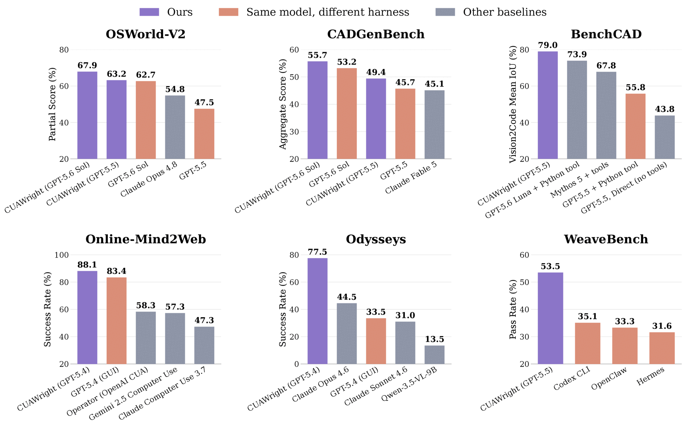
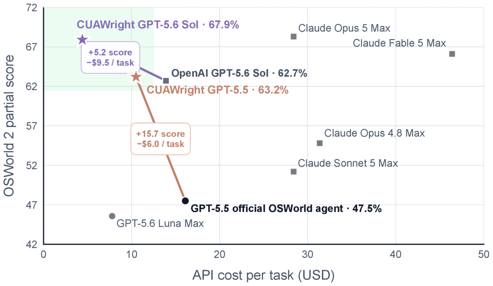
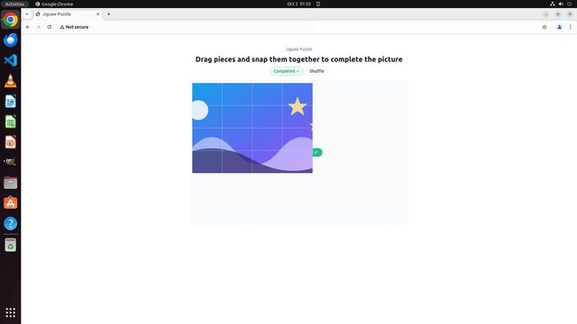
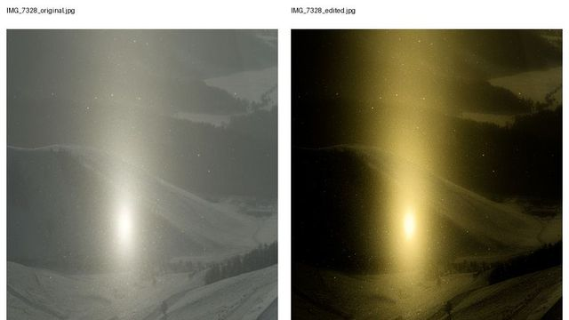
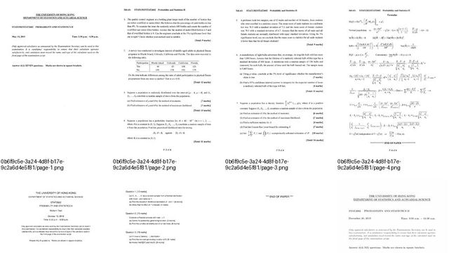
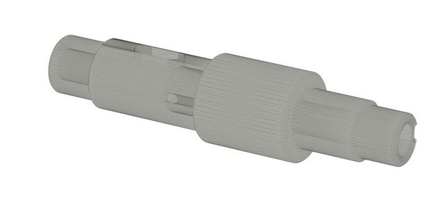
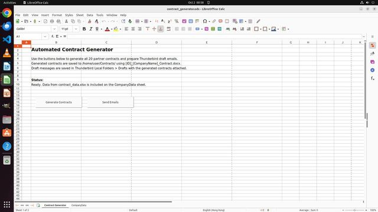
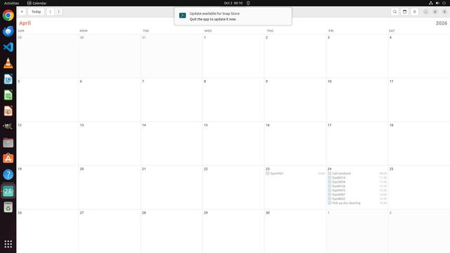
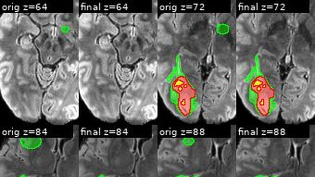

{ }
Code is the action
A form, a date picker, or a spreadsheet edit becomes a short program with loops and checks, not a long chain of clicks.
CUAWright is a minimal unified interface for browser and desktop agents. The model gets a terminal, writes code that drives a browser or an Ubuntu desktop, checks the result, and keeps its work on disk.
Yadong Lu, Theodore Lee, Yifei Li, Lawrence Keunho Jang, Tianci Xue, Yu Su, Huan Sun, Ahmed Hassan Awadallah
# idea
Most computer-use agents watch one screen and guess the next click. As models get better at code, that loop becomes the bottleneck. CUAWright keeps the small loop from Webwright and extends it to the desktop.
A form, a date picker, or a spreadsheet edit becomes a short program with loops and checks, not a long chain of clicks.
Scripts, logs, and screenshots stay on disk, so the agent can restart a browser and retry without losing progress.
Text alone never finishes a task. Browser runs rerun a final script; desktop runs end with an explicit submit command.
Everything else, the agent builds itself as it works.
run_command in a terminalWrites Playwright scripts, opens and closes browsers freely, and only looks at screenshots when needed.
final_script.py from each solved task$ python explore_results.py # inspect the page $ python final_script.py # rerun in a fresh folder $ python -m cuawright.webwright.tools.self_reflection Status: success
Works inside an OSWorld-V2 Ubuntu VM through a guest bridge, with CDP, xdotool, keyboard, mouse, and screenshots.
manifest.json, trace.jsonl, result.json$ libreoffice --headless --convert-to xlsx report.csv $ python check_cells.py # verify the saved file $ python /opt/cuawright-tools/submit.py submitted
# results
Each row compares CUAWright with the best existing harness running the same model.


# demo
# trajectories
Ten OSWorld-V2 runs with GPT-5.5 at xhigh reasoning effort. The agent writes scripts, checks its own work, and recovers when something fails. Open any run to step through its reasoning, commands, outputs, and screenshots.
$ python test_simple.py --ckpt_iter 200 ✓ Correct predictions: 0 (0.00%) $ … --ckpt_iter 1000 ✓ Correct predictions: 5546 (55.46%) $ … --ckpt_iter 5000 ✓ Correct predictions: 9087 (90.87%) $ … --ckpt_iter 7000 ✓ Correct predictions: 9281 (92.81%)
Trains longer and longer runs until test accuracy goes from 0% to 92.8%, then fills in the meeting note.

Cuts the pieces out of screenshots, finds the layout whose edges fit, then drags each piece with the mouse.

Measures the colour shift in a before/after pair, tests several transfer methods, and applies the best one.
Edits the slide XML, takes the title colour from the logo's pixels, and renders after each change.
$ curl …/chart/NVDA HTTP Error 429: Too Many Requests $ python fetch.py # retry, 5 tickers NVDA 122 days 2025-01-02 → 06-30 AAPL 122 days … $ python fill_workbooks.py Filled daily.xlsx and summary.xlsx
Downloads prices for five stocks, works around a rate limit, and fills two workbooks in 16 steps.

Searches 61 PDFs, matches scans visually with contact sheets, and finds the last paper in the Trash.

Reads exact dimensions from the drawing's vector paths and builds the part with a revolve script.

Builds macro buttons through UNO and fixes a failing loop with Python helpers: 20 contracts, 20 drafts.

Reads the schedule attached to an email, adds 7 defenses, and removes 2 conflicting events.

Reviews MRI overlay montages slice by slice, then fixes the mask while keeping the BraTS labels.
# quick start
Writes a trajectory, screenshots, and a reusable script.
pip install -e . playwright install chromium cuawright-web main \ -c base.yaml -c model_openai.yaml \ -t "<task>" --start-url <url> \ --task-id demo -o outputs/demo
Needs Python 3.12+, Docker, and the gated OSWorld-V2 snapshots.
pip install -e ".[desktop]" cuawright setup osworld --root <dir> cuawright desktop run \ --setup <dir>/setup.json \ --credentials <key-file> \ --results <out> \ --model <model> --instruction "<task>"
The host agent runs the loop, so no extra API key is needed.
# Claude Code /plugin marketplace add microsoft/Webwright /plugin install cuawright@cuawright # Codex codex plugin marketplace add \ microsoft/Webwright
cuawright.webwright; old commands and imports still work.
Webwright page →
# cite
@misc{lu2026cuawright,
title = {CUAWright: A Minimal Unified Interface for Digital Agents},
author = {Lu, Yadong and Lee, Theodore and Li, Yifei and Jang, Lawrence Keunho and Xue, Tianci and Su, Yu and Sun, Huan and Awadallah, Ahmed Hassan},
year = {2026},
eprint = {2610.04116},
archivePrefix = {arXiv},
primaryClass = {cs.AI},
url = {https://arxiv.org/abs/2610.04116}
}